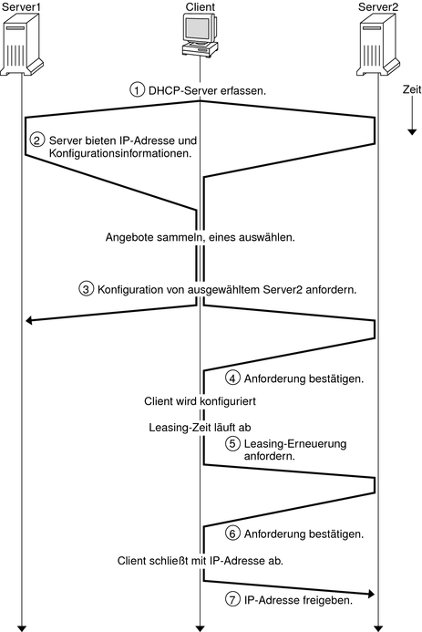
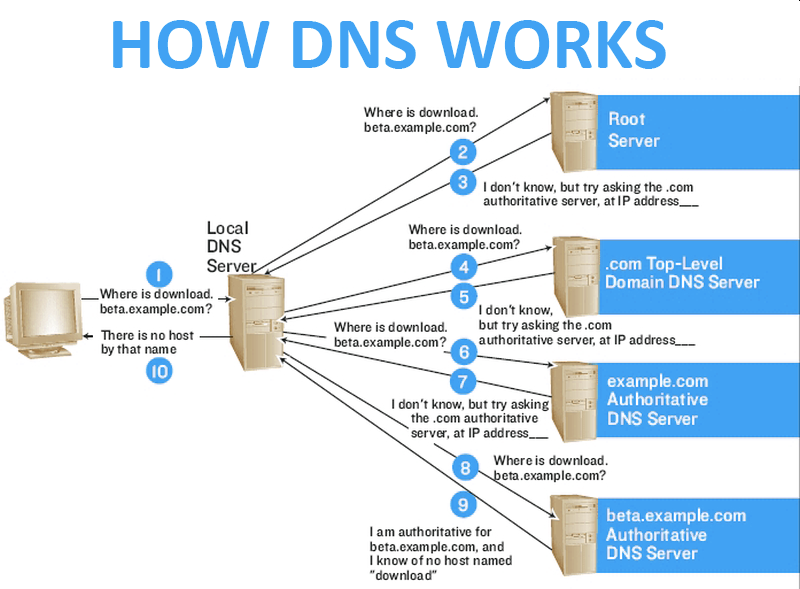
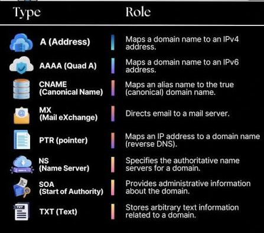

🧭 DNS-Auflösung & DHCP-Prozess im Detail
Wie eine Anfrage nach einer Adresse tatsächlich Schritt für Schritt durch die DNS-Hierarchie läuft, und wie ein Client bei DHCP überhaupt an seine IP-Konfiguration kommt - die Mechanik hinter den Modulen "DNS-Konzepte" und "DHCP/DNS-Tickets".
Der DHCP-Prozess: DORA + Erneuerung
i
Wie eine Wohnungssuche: du rufst laut in die Nachbarschaft, wer
eine Wohnung frei hat (Discover), mehrere Vermieter melden sich
mit einem Angebot (Offer), du entscheidest dich für eines und
sagst das öffentlich allen (Request - damit die anderen ihre
Wohnung nicht länger für dich freihalten), der gewählte Vermieter
bestätigt (Acknowledge).
i
Bevor ein Gerät überhaupt eine IP-Adresse hat, kann es niemanden gezielt ansprechen - deshalb läuft der Adressbezug per DHCP über Broadcasts, nach dem klassischen DORA-Schema:

Praktische Konsequenz: läuft ipconfig /release
gefolgt von ipconfig /renew - das ist der
klassische erste Trick bei IP-Problemen - startet genau dieser
DORA-Prozess von vorne.
DNS-Auflösung Schritt für Schritt (rekursiv)
i
Wie eine Telefonauskunft-Kette: du rufst eine zentrale Auskunft an
(Resolver), die weiss deine Nummer nicht, verweist dich aber an
die richtige Landesauskunft (TLD), die wiederum an die
zuständige Firmenzentrale (autoritativer Server) verweist - am
Ende bekommst DU die Antwort trotzdem nur einmal, von deiner
ersten Anlaufstelle.
i
Kein einzelner Server kennt jede Domain der Welt - die Auflösung läuft stattdessen als Kette von Verweisen ("Referrals") durch die DNS-Hierarchie:

Der (lokale/rekursive) Resolver merkt sich das Ergebnis danach für die Dauer der TTL im Cache - erst wenn diese abläuft, wird die komplette Kette bei Bedarf erneut durchlaufen (siehe Modul "DNS-Konzepte" zu TTL/Propagation).
DNS-Record-Typen im Überblick

| Typ | Bedeutung |
|---|---|
| A | Ordnet einen Domainnamen einer IPv4-Adresse zu |
| AAAA | Ordnet einen Domainnamen einer IPv6-Adresse zu |
| CNAME | Verweist auf einen anderen (kanonischen) Domainnamen statt auf eine IP |
| MX | Legt fest, welcher Mailserver für die Domain E-Mails entgegennimmt |
| PTR | Reverse-DNS: ordnet einer IP-Adresse einen Domainnamen zu (umgekehrte Richtung von A) |
| NS | Nennt den/die zuständigen (autoritativen) Nameserver für eine Domain |
| SOA | Start of Authority - administrative Basisdaten der Zone (u.a. Seriennummer, Refresh-/Retry-Intervalle) |
| TXT | Beliebiger Text-Eintrag, z.B. für SPF/DKIM/DMARC oder Domain-Verifizierung |
SPF/DKIM/DMARC (alle als TXT-Records hinterlegt) werden ausführlich im Modul E-Mail-Sicherheit behandelt.
🧩 Puzzle: DORA-Schritte in die richtige Reihenfolge bringen
🧩 Zuordnen: DNS-Record-Typ ↔ Zweck
0 / 8 Paare gefunden